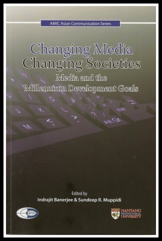

Publications
BOOK CHAPTER
Roy, A. (2009). Dynamics of the Radio Landscape in India. In Banerjee, I. & Muppidi, S. (Eds.) Changing Media, Changing Societies: Media and the Millennium Development Goals, Singapore: AMIC
Find @ Amazon
Conferences
Roy, A. (2008). Dynamics of the Radio Landscape in India, Local Broadcasting in the Age of Globalization, 17th Annual AMIC Conference, Manila, The Philippines
Dmytrochenko, N., Burton, R. & Roy, A. (2013). Public Diplomacy in the Internet age: Voice of America’s and Russia Today’s depictions of Russia and the United States on their websites. Sponsored by Eurasian Communication Association of North America, National Communication Association, 99th Annual Convention, Washington DC, USA.